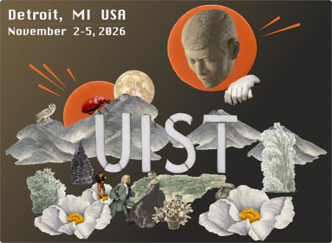
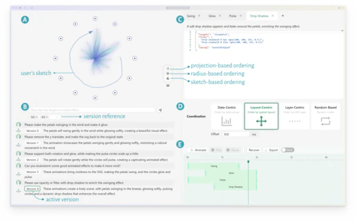
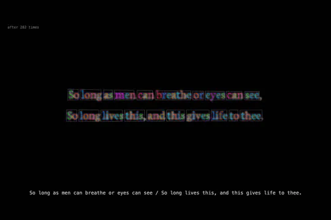
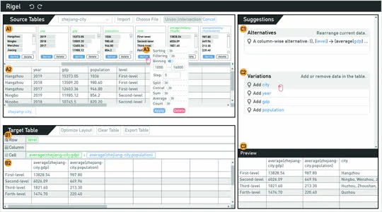

Can you spot the cat on my page?
Jiayi Zhou is a Ph.D. Student at The Hong Kong University of Science and Technology, advised by Prof. Huamin Qu in the HKUST VisLab. Her research interests lie at the intersection of Data Visualization and Human-Computer Interaction. She is curious about how creators "connect the dots" in storytelling amidst the explosion of information. She investigates how advanced Artificial Intelligence, including GenAI and computer vision models, can empower the visual storytelling process.
In daily life, Jiayi seeks moments of "connection" with nature, her beloved cat, her body, and like-minded individuals. She aspires to be a dedicated rower, an imaginative designer, and a perceptive photographer. Check out her blog posts: Behind the Submission • What I Talk about When I Talk about Rowing • Jiayi's Bookshelf • Collecting the Dots.



